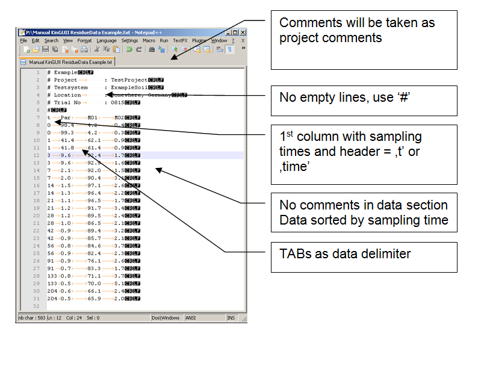
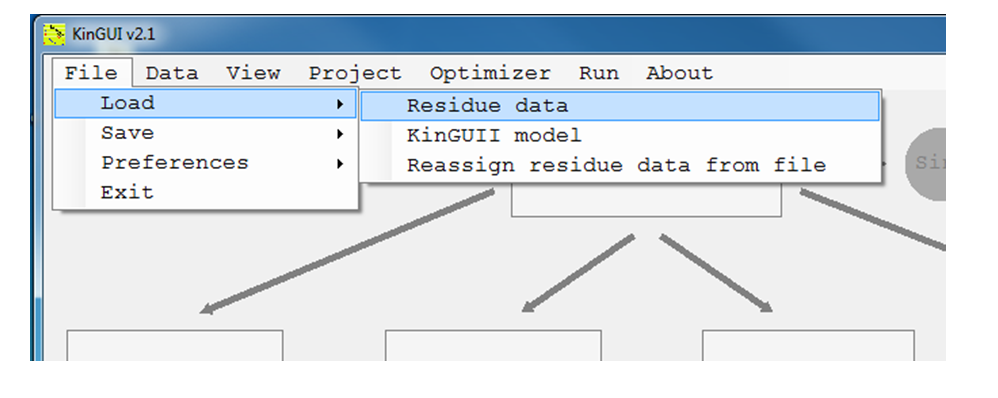
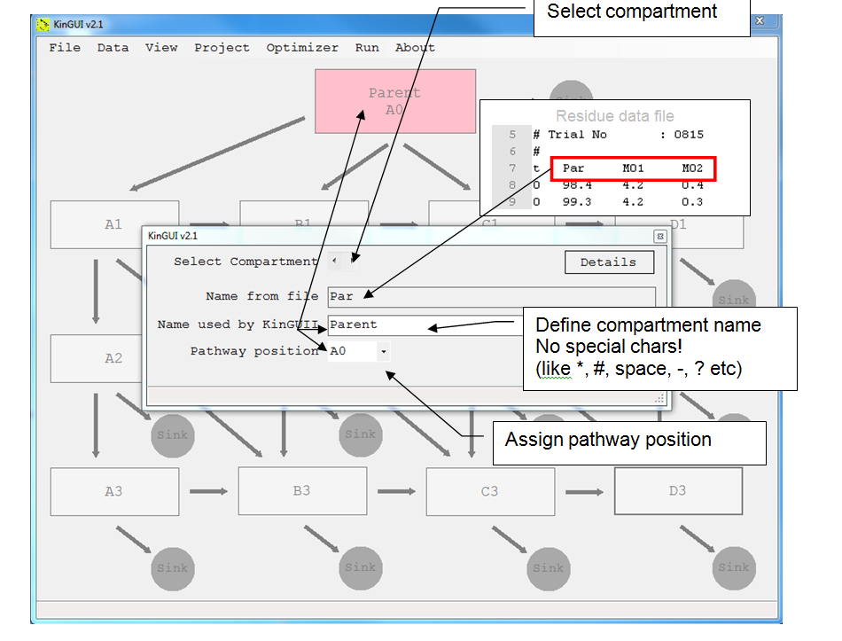
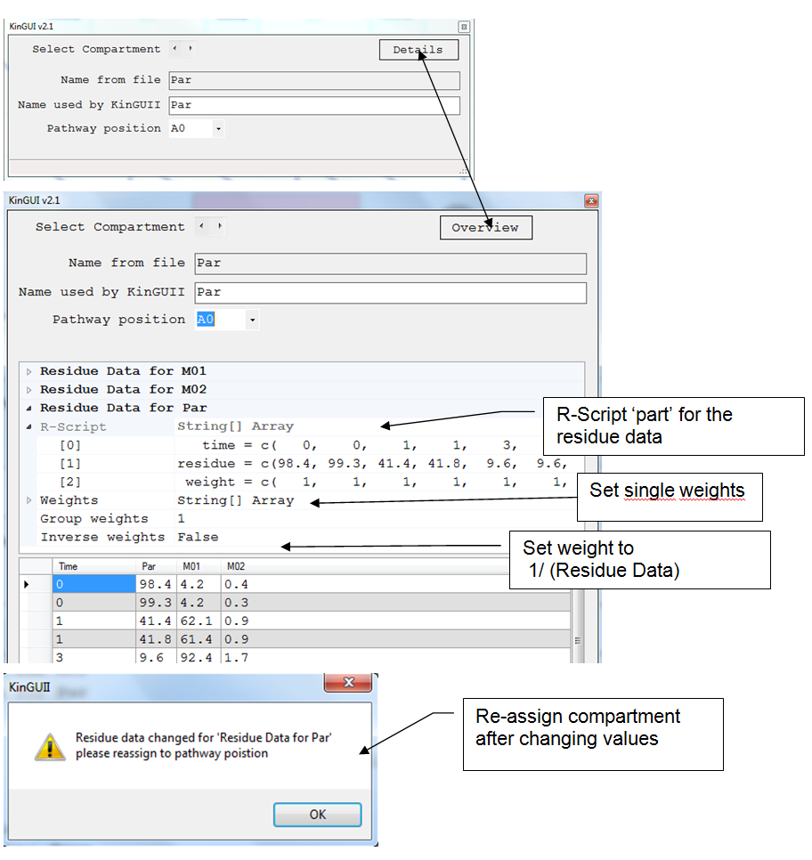
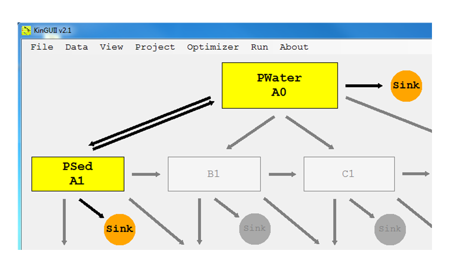

4 Data Management
2014-01-014.1 Workflow
- Prepare ASCII text file with residue data
- Load data to workplace
- Assign compartment residue data to pathway position
- Connect compartments
4.2 Preparation of residue input data
- Plain ASCII text file
- Comment lines must contain "#", ":" or "/"
- You may have as many comment lines as you want
- No empty lines allowed!
- 1st data column must always contain the sampling times, header for this column must be 't' or 'time'
- No special chars for compartment names (e.g. space, "?", "\", "*" etc.)
- Data delimiter: TAB
delimiter between data colums, there may be more than one TAB between two values (for alignment reasons) Note: tab-separated files can also be prepared using Microsoft Excel. Just save the file as a tab-stop separated .txt file, or copy-paste the data into a .txt file. - No comments in data rows
- Residue data must be sorted by sampling times
- Missing data can be left blank or marked as 'NaN' ('not a number')
- No columns with weights for your data points (will be edited later, std. value = 1) In general, the residue data should start at t = 0, because M0 (the parameter for the initial concentration) is defined as the concentration at t = 0.
Example:

4.3 Load residue data

4.4 Assign residue data to pathway positions

4.5 Weights

4.6 Connect Compartments
Just click on the gray arrows to change the compartment connection
- 1st Click: Connect compartment (black arrow)
- 2nd Click: Change direction of the connection
- 3rd Click: Equilibrium reaction (double arrow)
- 4th Click: Break connection (grey arrow)

4.7 Save/Load Workspace as XML-file
The complete workspace (model structure and data allocation but excluding project settings) can be saved or loaded at any time to/from an xml file.